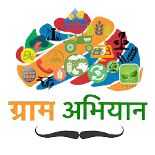
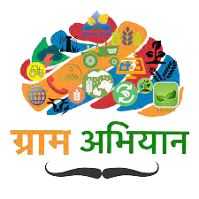

Sankalp Shukla
Mr. Sankalp Shukla is the founder of a youth led organisation named 'Development Leader's Alliance' and is also the director of business development and public policy- Mad Influence. Having a keen interest in rural and sustainable development, he founded 'Gram Abhiyan', aiming to transform villages in adherence to the UN goals of sustainable development and became the co-convenor for the movement 'Sankalp For Khadi'- directed towards propagating khadi and uplifting khadi weavers. He is an undaunting personality graduated with an honours degree in political science from Delhi University where he founded Delhi Youth Forum. Along with that he is a postgraduate from the IIDL in Leadership Governance and Politics. Currently Sankalp Shukla is a social entrepreneur ardently working on a multitude of areas including youth affairs, rural development, educational reforms, political strategies and national policy making. He has been a dedicated member of HWPL International Peace Advocacy Committee and has chaired Youth Leaders GPS 2017 with more than 700 delegates from 55 countries in partnership with the Commonwealth Youth Council. Taking his commitment towards youth affairs and governance reforms to a higher pedestal, he founded and chaired India Youth Summit which is India's first execution oriented youth summit including participation from 732 districts of India. He has won several awards for his efforts including India's top 100 Young Leaders Award and Vivekanand Young Changemakers Award. Pursuing his interest in politics, Sankalp has strategized multiple elections for national leaders. Shukla has also been a core member for a team organising health treatment camps in the rural areas of Allahabad in partnership with IMA, providing free health check-ups, medicines and aids such as spectacles and hearing aids to over 5500 people. He is a thriving personality with an immense inclination towards amelioration and reformation of the nation building process. He continues his spadework and toil for the welfare of people of this nation.
ABOUT

DLA is structured to link the diverse experience of stakeholders from multiple sectors towards the explicit goal of creating impact on the development process of the country. It envisions to attract scholars of diverse fields and create an alliance for serving the nation. It strives to engage a broad network of various stakeholders towards a shared vision of inclusive development. It introduces various execution-oriented initiatives to create a larger impact and attract youth towards nation-building. Moreover, it prepares the youth for leadership roles that allow them to learn and work across disciplines and network with society leaders. This organisation aims to build trust, commitment, inspiration and innovation through collaborative efforts and continuous communication.
THE INITIATIVES
 


INDIA YOUTH SUMMIT
It is a confluence of Conference, Festival and Investor meet which will provide an opportunity to the young minds of the country to bring forth the design for India's nation building process and discuss it with thought leaders, policy makers, entrepreneurs and other stakeholders so they can decide how to drive and derive their dream of India and can become part of India's socio economic development model.
GRAM ABHIYAAN
Gram Abhiyaan is an initiative of its own kind to uplift the unique soul of India which are Villagers and Villages. Gram abhiyaan's vision is to empower the villages of india to uplift them and make them self-sustaining along with connectivity with modern world. The initiative has been inspired by Mahatma Gandhi's vision of swaraj, sarvodaya and swavalamban which also has its appearance in the Prime Minister Narendra Modi's vision of Adarsh Gram. In this way, the initiative aims to contribute towards the Nation Building process. Gram Abhiyaan also focuses on "Antvodava" a term which clearly describes the dream of Pandit Deen Dyal Upadhyaya of uplifting of the weakest section of the society and "Sarvodaya" which means development of all.
THE LEADER'S TALK
The Leader Talks strives to builds a community of leaders, who are driving the positive change in India and are creating projects, exchanging know-how, valuable information and experience. We believe that the fuel for growth of our ecosystem and our nation is the leadership potential of the current generation of leaders. It is our own responsibility to build this potential, nourish it and develop it in order to make our country better.
POLICY BOOTCAMP
Leadership• Learning•Legacy
Leadership and learning are indispensable to each other. The Policy Bootcamp by DLA strives to inspire young minds who aspire to become the building blocks of the nation. It serves as a launchpad for aspiring public leaders, and policy enthusiasts who want to build a career in nation-building. The engagement of delegates with public leaders, academicians, bureaucrats, and grassroots workers motivated them to actively drive responsible reforms in India. We are keen to quest after problem solvers, young agents, and future leaders.
8 YEARS 80 MIRACLES
DLA announces to launch a Coffee table Book '8 Years 80 miracles' in its upcoming event. The book consists of a detailed description of the development projects done by the government in the past eight years. This comes as; the ruling government is set to accomplish 8 years of its tenure on the 30th day of the upcoming month. The book is a look back at the top 80 miracles done by the Modi government in these 8 years.